Section VI. Tackle For Mid-Water Fishing. Continued
Description
This section is from the book "American Game Fishes", by W. A. Perry. Also available from Amazon: American Game Fishes: Their Habits, Habitat, and Peculiarities; How, When, and Where to Angle for Them.
Section VI. Tackle For Mid-Water Fishing. Continued
Fig. 41 shows the gang baited. The manner of accomplishing this is as follows: kill the minnow, then insert the two long prongs into the fish at a point a little tailward of the dorsal fin, and push it as far as it will go toward the fork
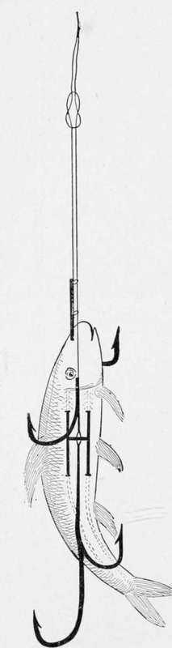Fig. 41.
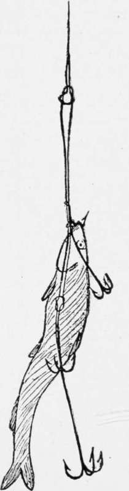Fig. 45.
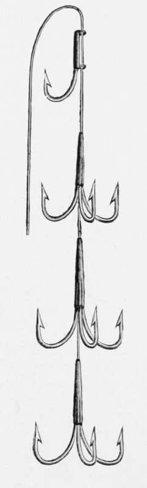Fig. 46.
of the tail, along-side the backbone of the minnow. Now below the head of the fish insert the short barbed forks, and press them up to the cross-bar, withdrawing the long forks at the same time, of course. It is now baited as shown (fig. 41), with the exception of the bend in the tail-end of the body. This is made to the extent required, according to the judgment of the angler. About the bend shown in the diagram is sufficient, ordinarily, to make the fish revolve with celerity, and without much "wobbling."
Fig. 42 shows the "Pennell" gang, and it is deservedly popular, in England; the only fault I find is that the triplet often fails to hook the fish. It is the fault of all triplets. One hook goes in quicker, and holds quite tight enough for me. Fig. 43 shows the gang baited. Fig. 44 shows the "Nonpareil" gang. The junction at A allows of the lip-hook being shortened or lengthened, according to the size of the bait. Fig. 45 shows the bait in situ. The sinker is placed in the mouth, and the lips are closed by means of the lip-hook. The back is turned and bent as shown, to produce the spin or "wobble" so necessary to attract the attention of the fish.
Fig. 46 indicates the ordinary trolling-gang, and it is not to be entirely condemned, because it undoubtedly does catch fish. The lip-hook in this case is stayed in its place by means of a twist or two round the shank. The above tackle is sufficient for all practical purposes in trolling.
Sometimes, when the grass is too thick to allow of a bait being drawn through the water without the hooks fouling, the dead gorge bait is used. In this country it is deservedly reprobated, except under the circumstances I have named; and in the British Islands it is equally decried, during late years, though books have been written about it, in the "long ago," as witness Nobbe's "Art of Trolling." The ordinary form of the hook is shown at fig. 47. A is a pear-shaped body of lead, and the hook is passed, by means of a baiting-needle.
in at the mouth and out at the tail, the double hooks lying by the side of the bait's head, just under the eyes. This bait is not drawn through the water, as the spoon or dead gang-bait is drawn; but, after casting, it is manipulated with a sink-and-draw motion, and when the angler has a "strike," he lowers the point of the rod, and gives five minutes or so for pouching or "gorging." He then reels in-does not strike -and the hooks penetrate the gullet of the fish.
An improvement on this hook is shown at fig. 48. The body of the affair is made of linked leads or sinkers, and the hook itself is adjustable, so that no matter what size the bait is, the angler has only to add to or take away from the leads.
and alter the size of the hook, to suit the bait. With fig. 47 this is impossible. A fresh hook must be substituted each and every time.
Tackle For Live-Minnow Fishing
The ordinary single hook, hooked through the lip or under the back fin, generally suffices the rough-and-ready angler. But the observant angler notices that only a comparatively small percentage of fish are hooked when they are "coming short"-or not biting with avidity. To avoid this, I commonly adjust a large single hook or triplet, as in fig. 49, below the single hook; or, as in fig. 50, a rubber band is tied so that it keeps the hooks in situ, thus causing no inconvenience to the bait except that of having a hook through the gristly cartilage of the nose- which I do not think the bait objects to very much.
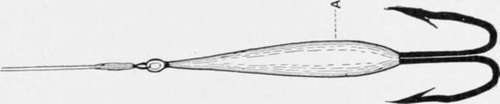Fig- 47.
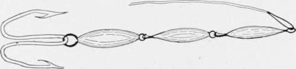Fig. 48.
Fig. 51 shows a more brutal "gorge" live bait. It is deadly because the fish is allowed to gorge it before the angler strikes on him. That is all the recommendation I can give it.
In fig. 52 we have the best arrangement for live-bait fishing, where large Pickerel, Pike, or Mascalonge are expected.
The hook near the gills is lightly hooked under the pectoral fin, and that on the back penetrates the cartilage of the dorsal-cruel to the bait, but deadly. With it Mr. Alfred Jardine, of London, England, took the two largest Pike ever taken
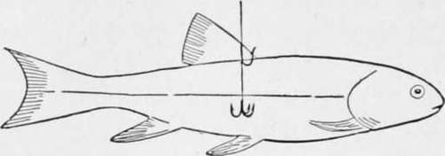Fig. 49.
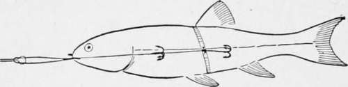Fig. 50.
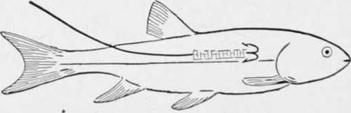Fig. 51.
with a hook and line. They weighed seventy-two and-one-half pounds the pair.
Of all live-bait tackles, however, I prefer (individually) the "paternoster " (so-called from its succession of hooks, probably, like beads on a rosary). Fig. 53 shows it. The main line may be either gimp or gut, and the hooks are attached as shown. At the lower extremity is a pear-shaped lead. This tackle is cast out gently, and as gently worked in toward the boat; and thus it searches the water within considerable radius. Sometimes a couple, or even three, Bass are on the hooks at one time, and then, look out for fun!
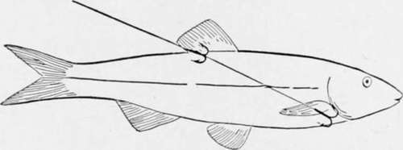Fig- 52.
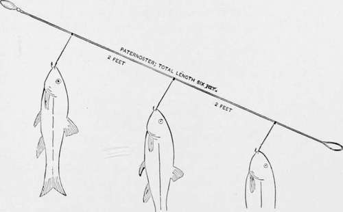Fig- 53.
Here endeth mid-water fishing, so far as the actual hook-tackle is concerned. A few remarks on other parts of the outfit may be in order, and they need be only very few.
First, as to the leaders, or "traces," as they are termed, "over the water": In order to avoid "kinking," it is necessary that to all trolling baits swivels should be used. I prefer at least three-one at each end-and if a sinker is needed, one just before it on the line. The traces are best of stout gut, or fine gimp, or twisted gut. The latter make elegant and very strong lines.
I mentioned the sinker, just now. Of course, in the case of fig. 44, no sinker is needed on the line to sink the bait, but one is to be preferred with all the others. This sinker should be heavy or light, according to the depth of the water, or the rapidity of the stream if there is a current. If possible it should be adjustable, and it should always lie under-not on-the line. Fig. 54 shows an adjustable sinker of the shape I prefer. It is rendered adjustable by means of the spiral terminations into which is forced a piece of soft India-rubber cord. As can be seen, it is possible to alter the position to far or near the bait, at will, and if this be used as well as three swivels, there need never be any "kinking."
The reel should be of either of the good makes. Do not purchase a cheap imitation of a good make; and let the one you get be large enough to hold at least 300 feet of line.
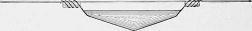fig. 54.
Continue to:
- prev: Section VI. Tackle For Mid-Water Fishing
- Table of Contents
- next: Section VII. Bottom-Water And Bait Fishing